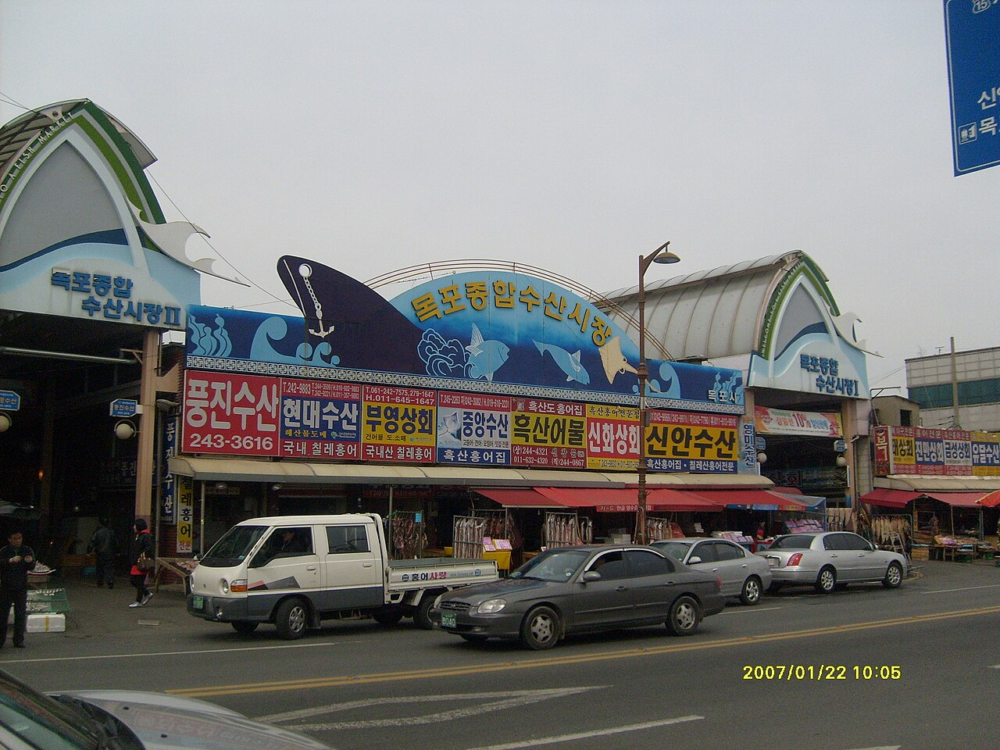
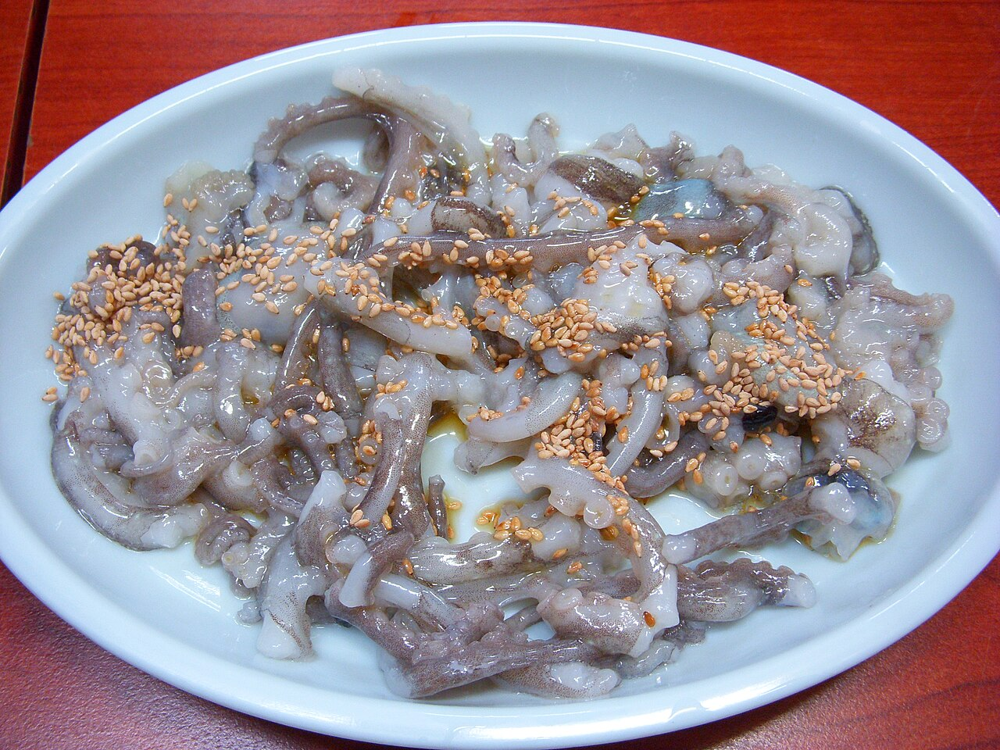

From four themed A · B · C · D courses to local favorites only residents know! Plan your day with photo slides and real traveler reviews.
Mokpo day trip in 4 courses: the modern history street, marine cable car, Mokpo Bridge at night and a food tour of skate, croaker and octopus. Pick the course that suits you below, and check each spot's highlights, suggested time, address and local tips.
🏛️ Course A: Modern History & Retro Culture Course
⏱️ About 5–6 hours📍 About 4.2 km
A trip back 100 years and Mokpo's one-of-a-kind retro vibe
Suggested route: Mokpo Modern History Hall No.1 (Former Japanese Consulate) → Seosandong Poetry & Mural Alley and Yeonhee's Supermarket → Yudalsan Park & Nojeokbong Peak
Old-town charm and famous film and drama scenes
The red-brick Renaissance-style exterior built in 1900
1. Mokpo Modern History Hall No.1 (Former Japanese Consulate)
목포근대역사관 1관 (구 목포일본영사관) · Modern history / Architecture
Built in 1900, shortly after Mokpo opened its port in 1897, this Western-style brick building is one of the best-preserved modern structures in Korea. Its red brick, distinctive patterns and original fireplaces remain intact. Inside, exhibits document colonial-era exploitation and Mokpo's independence movement, and you can also visit an air-raid shelter and Japanese military remains — a place that satisfies both history lovers and photographers.
Suggested time
about 1.5 hours
Address
6 Yeongsan-ro 29beon-gil, Mokpo, Jeollanam-do
Travel tip
Take a photo from the front stairs where the "Hotel del Luna" sign stands. We recommend combining it with Hall No.2 (the former Oriental Development Company) right next door.
Old-town houses climbing the hill below Yudalsan's rocks
2. Seosandong Poetry & Mural Alley and Yeonhee's Supermarket
서산동 시화골목 & 연희네슈퍼 · Retro vibes / Alley walk
On the slopes of Yudalsan in Seosan-dong, this poetry alley was once home to Mokpo's fishing families, and its narrow hillside lanes still carry the feel of the 1980s. "Yeonhee's Supermarket," where the heroine of the film "1987" lived, is preserved as it was, with old stationery and sundries on display. Charming poems and murals line the climb, and the view of Mokpo's harbor from "Borimadang" near the top is wonderfully refreshing.
Suggested time
about 1.5 hours
Address
14 Borimadang-ro, Mokpo, Jeollanam-do
Travel tip
Strike a retro pose on the wooden bench and phone booth in front of Yeonhee's Supermarket. The lanes are steep, so wear comfortable shoes.
Yudalsan's rocky peaks and pavilions
3. Yudalsan Park & Nojeokbong Peak
유달산 공원 & 노적봉 · Nature / Historic site
At just 228 m, Yudalsan is not tall, but its dramatic rock formations and views make it the symbol of Mokpo. Nojeokbong at the entrance is famous for a legend from the Imjin War: Admiral Yi Sun-sin disguised the rock as a giant pile of army rice to deceive the Japanese forces. Follow the well-kept trails and decks up to Ildeung Rock and Ideung Rock for sweeping views of downtown Mokpo, the Yeongsan River estuary and the blue archipelago.
Suggested time
about 1.5–2 hours
Address
118 Yudalsan-gil, Mokpo, Jeollanam-do
Travel tip
You don't need to reach the summit — the area around Nojeokbong and the Dalseonggak rest area already offers great views of Mokpo. A flower festival is held in spring.
Breathtaking views linking mountain, sea and islands
The Mokpo Marine Cable Car crossing the sea at sunset
1. Mokpo Marine Cable Car (Bukhang–Yudalsan–Gohado)
목포해상케이블카 (북항~유달산~고하도) · Landmark / Ocean activity
Starting at Bukhang Station, the cable car passes Yudal Station near the top of Yudalsan, then crosses the sea to Gohado Station — at 3.23 km, it is Korea's longest marine cable car. The tower over the sea alone stands 155 m tall for a real thrill. In a glass-floored Crystal Cabin you can watch the waves right beneath your feet, while downtown Mokpo, Yudalsan's cliffs, Mokpo Bridge and the islands unfold in a 360-degree panorama.
From the cable car's Gohado Station, a forest path leads down to a 1.8 km deck trail built over the sea. Rock formations carved by millions of years of weathering rise on one side and open sea stretches on the other — perfect for walking to the sound of the waves. Midway stands a striking 24 m wooden observatory inspired by Admiral Yi Sun-sin's 13 panokseon warships, offering views in every direction.
Suggested time
about 1.5 hours round trip
Address
234 Gohadoan-gil, Mokpo, Jeollanam-do
Travel tip
The trail connects directly to the cable car's Gohado Station. It can be windy, so bring a jacket and comfortable sneakers.
The Dancing Sea Fountain's night show of light and music
3. Peace Square & Dancing Sea Fountain
평화광장 & 춤추는 바다분수 · Waterfront / Night media show
Peace Square is an open waterfront space along the coast of the new Hadang district, loved by locals and travelers alike. You can jog or stroll with wide-open sea views, and the "Dancing Sea Fountain" offshore puts on a spectacular multimedia show where water screens, lasers, lights and jets dance to music. The Gatbawi pedestrian bridge and a street of restaurants are nearby.
Suggested time
about 1 hour
Address
82 Pyeonghwa-ro, Mokpo, Jeollanam-do
Travel tip
Fountain shows run at set evening times that change by season. Watch from a bench on the square or the terrace of a nearby ocean-view café.
Mokpo's 9 signature dishes, Daebandong sunsets and the glittering Mokpo Bridge
Suggested route: Mokpo Dongbu Market & the 9 Delicacies of Mokpo → Mokpo Marine Skywalk → Daebandong Yudal Resort & Mokpo Bridge Night View
Rich southern flavors and a romantic night view
A lively Mokpo seafood market
1. Mokpo Dongbu Market & the 9 Delicacies of Mokpo
목포 동부시장 & 남도 9미 맛집 탐방 · Local food / Traditional market
Where land meets sea, Mokpo is officially recognized as a "City of Taste." At Dongbu Market, the city's largest traditional market, you'll find fresh seasonal seafood, rice cakes, sweet-and-crispy fried chicken and much more. Among the "9 Delicacies of Mokpo," seasoned crab and crab-meat bibimbap, nakji tangtangi made from tidal-flat octopus, fermented skate with pork and kimchi (hongeo samhap) and summer croaker sashimi offer flavors you can only truly enjoy here.
Suggested time
about 1.5 hours including a meal
Address
174 Sanjeong-ro, Mokpo, Jeollanam-do
Travel tip
For crab bibimbap, mix a little crab sauce into rice with seaweed flakes and sesame oil, then wrap it in dried laver for the best flavor.
The sea off Daebandong and Mokpo Bridge, home of the skywalk
Located on Daebandong beach in the Yudal resort area, the Mokpo Marine Skywalk stretches 54 m out over the sea. Walking 12–15 m above the water on tempered glass and steel grating feels like strolling on the sea itself. Straight ahead, the cable-stayed Mokpo Bridge and Gohado island spread out like a painting, and at sunset golden light floods the skywalk.
Suggested time
about 45 minutes
Address
59 Haeyangdaehak-ro, Mokpo, Jeollanam-do
Travel tip
The most famous shot is taken at the end of the skywalk with Mokpo Bridge behind you. Entry is free — just put on the shoe covers provided.
A red sunset closing the day over the archipelago
3. Daebandong Yudal Resort & Mokpo Bridge Night View
Locals and travelers agree that the Daebandong Yudal resort area is the best sunset and night-view spot in Mokpo. At dusk the sky over the archipelago and Gohado burns pink and red, and after dark the towers of the 4.13 km cable-stayed Mokpo Bridge light up in vivid colors. Stylish rooftop cafés and seafood food stalls line the shore for a romantic evening.
Suggested time
about 1.5–2 hours
Address
57 Haeyangdaehak-ro, Mokpo, Jeollanam-do
Travel tip
Arrive 30 minutes before sunset and enjoy the "magic hour" as the sunset turns into a night view — the most romantic way to end your day trip.
🍽️ Course D: Mokpo 9 Delicacies Food Tour Course
⏱️ About 5–6 hours (including meals)📍 About 4.5 km
Hongeo samhap at the fish market, summer mineo on Croaker Street and sebal nakji at Bukhang
Suggested route: Mokpo Fish Market & Hongeo Samhap → Manho-dong Mineo (Croaker) Street → Bukhang Raw Fish Center & Sebal Nakji
A three-meal food trip through Korea's "City of Taste"

Mokpo Fish Market lined with skate shops
1. Mokpo Fish Market & Hongeo Samhap
목포종합수산시장 & 홍어삼합 · Fish market / Skate dishes
Mokpo Fish Market sits on Haean-ro facing Mokpo Port, and so many of its shops specialize in skate (hongeo) that the market is famous for it. Skate caught in the southwestern sea around Heuksando is fermented in jars to give it a sharp, pungent kick, then wrapped together with boiled pork and aged kimchi to make "hongeo samhap," the signature dish. If the fermented flavor sounds intimidating, start with lightly fermented skate sashimi or the sweet-and-tangy spicy skate salad. You can also browse dried seafood, salted fish and seasonal catches.
Suggested time
about 1.5 hours including a meal
Address
265-4 Haean-ro, Mokpo, Jeollanam-do
Travel tip
Skate tastes very different depending on how long it's fermented, so ask for a "lightly fermented" one if it's your first time. Most shops can pack it to go or ship it.
A generous spread centered on mineo sashimi
2. Manho-dong Mineo (Croaker) Street
만호동 민어의 거리 · Croaker restaurants / Summer stamina food
Despite its name, "the people's fish," mineo (brown croaker) has long been treasured as a summer stamina food and is one of Mokpo's 9 signature dishes. Along Beonhwa-ro in Manho-dong, the old downtown, restaurants that have served mineo for decades cluster together to form "Mineo Street." The local way is to enjoy the whole fish: thick-cut sashimi, chewy swim bladder, savory skin, golden mineo pancakes and a refreshing soup made from the bones. It's close to the Modern History Museum, so it pairs well with an old-town walk.
Suggested time
about 1–1.5 hours for a meal
Address
Beonhwa-ro area, Manho-dong, Mokpo, Jeollanam-do
Travel tip
Mineo is in season from June to August, when it's at its richest. Go with 2–3 people and order both sashimi and soup to taste a variety of cuts.

A plate of live octopus with sesame oil and seeds
3. Bukhang Raw Fish Center & Sebal Nakji
북항 회센터 & 세발낙지 · Raw fish center / Octopus dishes / Sunset
Bukhang is a fishing port right beneath Mokpo Bridge, with live-fish centers and raw fish restaurants lined up along the harbor. The must-try here is "sebal nakji," a mudflat octopus with thin legs and one of Mokpo's 9 signature dishes. It's eaten whole wrapped around chopsticks, chopped and tossed in sesame oil as "nakji tangtangi," or in a light, clear yeonpo-tang soup. You can also pick a live fish at the center and have it sliced on the spot, and around sunset the sky behind Mokpo Bridge makes a beautiful backdrop for dinner.
Suggested time
about 1.5 hours for a meal
Address
Bukhang area, Jukgyo-dong, Mokpo, Jeollanam-do
Travel tip
If you eat live octopus whole, chew well and take your time. First-timers may prefer tangtangi or yeonpo-tang. Arrive about an hour before sunset to dine with the view.
Opening hours, fees and access restrictions can change with the season and local conditions. Please check each place's official information before you visit.